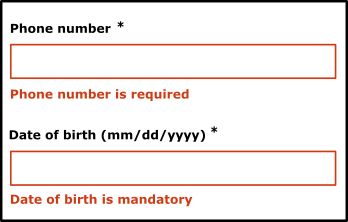
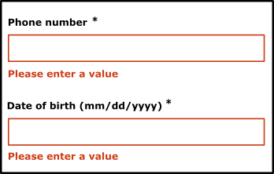

Form examples
Introduction
To create an accessible form to all users, some rules must be followed during development. This is what we will see in detail in the next example.
Accessible form example
In this example, we used the Boosted library. It provides forms that comply with the Orange design guidelines. We also used the validate jQuery plugin for input validation.
Implementation
Add label to form fields
All form fields should be labelled with an appropriate label. Thus, the screen reader will automatically vocalize the form field label.
Additionally, field labels (label) must be visually close to their associated field in order to facilitate the visually impaired or cognitive impaired or people having trouble concentrating.
To label a field, there are several solutions.
Using the label tag
This is the standard solution, it should be used in priority, as it is supported by most of the assistive tools.
Use a label tag and its for attribute with the `id` of the associated form field. It is important for screen reader users, but it also improves the usability of the form: when the label is correctly associated with the form field, it becomes possible to tick a check box or select a radio button by clicking on its label.
<input type="checkbox" id="tos">
<label for="tos">Please accept the TOS.</label>
In rare cases, it may not be necessary to display a label (e.g. search field). You should still provide a label for screen readers and hide it using one of the following 3 methods:
Accessible hiding
This is the method used in the second input field of the address in the accessible form example (using the sr-only Bootstrap/Boosted class).
CSS
.sr-only {
position: absolute;
width: 1px;
height: 1px;
padding: 0;
margin: -1px;
overflow: hidden;
clip: rect(0, 0, 0, 0);
border: 0;
}
HTML
<label for="address">Address *</label>
<input name="address" data-displayname="Code" class="form-control" id="address" aria-required="true" type="text">
<label class="sr-only" for="complement">Address complement</label>
<input class="form-control" id="complement" type="text">
Accessible hiding lets you hide the item on the screen while maintaining its vocalization by assistive tools. Caution, do not use CSS conventional hiding (display: none; or visibility: hidden;) because the item will also be hidden for screen readers.
See the accessible hiding example for more information.
Using the title attribute
The title attribute is not useful for accessibility except in this case. It is a robust way to label a form field. It will also show a tooltip when the mouse is over the field.
<input type="text" title="Search in the catalog">
Note: the title attribute positioned elsewhere than on a form field (e.g. in an image) does not give you the certainty that its content will be vocalized by a screen reader.
Using the aria-label or aria-labelledby ARIA attribute
The aria-label and aria-labelledby attributes can be used to label the form fields and is supported on the main browsers:
- The
aria-labelledbyattribute is used to specify the `id` of an element that will be used to label the field. - The
aria-labelattribute is used to directly specify a label as a string.
<span id="label-address">Address *</span>
<input type="text" aria-labelledby="label-address">
<input type="text" aria-label="address complement">
For example, to enter a date in a form with 3 fields, one for the day, one for the month and one for the year, a possible solution could be:
<label for="birthDay">Birthday</label>
<input type="text" id="birthDay" aria-label="Day of birth (DD)">
<input type="text" id="birthMonth" aria-label="Month of birth (MM)">
<input type="text" id="birthYear" aria-label="Year of birth (YYYY)">
placeholder and label
The placeholder (hint) attribute cannot be used instead of a label. Indeed, the text of placeholder which appears in the field poses problems:
- It usually does not have enough contrast.
- It disappears when something is typed on the field (causes difficulties for cognitive impaired).
placeholderis not always read by assistive technology.- It prevents the user from verifying the input before validating if used instead of the label.
- It makes error corrections difficult if no label is displayed.
- It makes them less visible than the input fields without
placeholder
In contrast, the placeholder can guide the user, helping to fill a field (for example by describing the expected format or value): do not hesitate to use it in this situation.
<div class="form-group">
<label for="serial-number">Please enter the serial number *</label>
<input type="text" name="serie" data-displayname="serial number" class="form-control" id="serial-number" aria-describedby="helpblock"
aria-required="true" placeholder="e.g. TS-0000">
</div>
Specify the required fields
You must, of course, clearly indicate to any user that a field is mandatory. This can be done using a distinctive sign (indication, pictogram, image, etc.) but also with a simple text (e.g. “mandatory”) in the field label. If necessary, add a mention at the beginning of the form to indicate that the symbol or pictogram indicates a required field.
Required fields must be provided in the code using the required HTML5 attribute or the aria-required ARIA attribute, especially for the visually impaired.
<input type="text" name="phone" required>
<input type="text" name="phone" aria-required="true">
Specify the type or the expected format
When necessary, specify the type or format of the expected data. For this information to be vocalized automatically by screen readers, add it to the label preferably or otherwise use the aria-describedby attribute.
<div class="form-group">
<label for="serial-number">Please enter the serial number *</label>
<input type="text" id="serial-number" aria-describedby="helpblock" aria-required="true">
</div>
<span id="helpblock" class="help-block">Serial number starting with “TS-” followed by for digits (e.g. “TS-4521”).</span>
Grouping similar information
Fields of the same kind shall be grouped together if necessary (fields with the same label or with a tag not explicit enough), using a fieldset tag. The first child of the fieldset must be an explicit legend (legend tag). The fieldset/legend pair is necessary, particularly when the legend is useful for the understanding or the differenciation of otherwise undistinguishable labels using the label tags included in the fieldset.
<fieldset>
<legend>Phone color</legend>
<input type="radio" name="color" id="white" checked>
<label for="white">White</label>
<input type="radio" name="color" id="black">
<label for="black">Black</label>
</fieldset>
<fieldset>
<legend>Shipping address</legend>
<label for="name">Contact</label>
<input type="text" id="name">
<label for="address">Address</label>
<input type="text" id="address">
<label for="city">City</label>
<input type="text" id="city">
</fieldset>
<fieldset>
<legend>Billing address</legend>
<label for="name1">Contact</label>
<input type="text" id="name1">
<label for="address1">Address</label>
<input type="text" id="address1">
<label for="city1">City</label>
<input type="text" id="city1">
</fieldset>
Input validation
During validation, if mandatory fields are not filled, or if the format of the data entered is not valid, the user must be warned.
Use the aria-invalid attribute to indicate an input error.
Specify in the code the invalid fields.
<input type="text" name="phone" aria-invalid="true">
Warn the user in case of input error
If input errors prevent validation of the form, the user must be warned. Often messages appear on the screen, but by default they are not vocalized by the screen reader. One solution is to automatically move the focus in the first field containing an error. This will vocalize the label(s) of the concerned input field.
In this accessible form example, error messages are reported as label and are associated with input fields. Thus, when the focus moves in a field, the screen reader vocalizes the field label and the associated error message.
This mechanism is supported out of the box by the validate jQuery plugin.
<label for="serial-number">Please enter the serial number *</label>
<input aria-invalid="true" class="error" id="serial-number" aria-describedby="helpblock" aria-required="true" type="text">
<label for="serial-number" class="error" id="serial-number-error">Serial number is mandatory.</label>
Please note, although it is perfectly valid to use multiple labels for a single form field, it is for the time advised to double it with an aria-labelledby attribute. Read Steve Faulkner’s blog post for more information.
<label id="serie-label" for="numero-serie">Please enter the serial number *</label>
<input aria-invalid="true" class="error" aria-labelledby="serie-label serie-error" id="numero-serie" aria-describedby="helpblock" aria-required="true" type="text">
<label id="serie-error" for="numero-serie" class="error" id="numero-serie-error">Serial number is mandatory.</label>
Display explicit error messages and, if necessary, suggest corrections
Error messages should be relevant and, if necessary, provide valid input examples.
Do:

Don’t:
